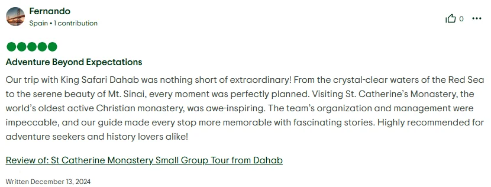

Una excursión de mañana, sencilla y sin prisas, desde Dahab al Monasterio de Santa Catalina, al pie del Monte Sinaí. Un guía del monasterio te recibe en la puerta y te lo explica todo dentro, y por la tarde ya estás de vuelta en Dahab.

El día
- 08:00: salida de The Hub en Dahab
- Unas 2 horas: trayecto a Santa Catalina
- En el monasterio: un guía del monasterio te recibe, te acompaña y te lo explica todo
- 12:00: el monasterio cierra y vuelves a tu coche
- Unas 2 horas: regreso a The Hub
Dentro del monasterio
Santa Catalina es uno de los monasterios en funcionamiento más antiguos del mundo, al pie del Monte Sinaí. Con el guía del monasterio verás la Zarza Ardiente, donde Moisés habló con Dios, el Pozo de Moisés y la iglesia del monasterio, con siglos de iconos e historia.

Incluido
- Recogida y regreso privados a tu hotel en Dahab o a The Hub
- El guía del monasterio
- Entrada al Parque Nacional de Santa Catalina (el monasterio en sí es gratuito)
No incluido: comida y bebida, la entrada al museo del monasterio, propinas y gastos personales.
Qué llevar
- Tu pasaporte: importante, hay controles en la carretera
- Gafas de sol
- Ropa que cubra hombros y rodillas, para el monasterio
- Algo de efectivo para el museo y bebidas
No traigas
- Un dron (los drones están prohibidos en Egipto)
- Pantalón corto o camisetas sin mangas para la visita al monasterio
Precio
$300 por coche, de 1 a 4 personas
Reserva esta excursión
Envíanos tu fecha y el número de personas por WhatsApp. Confirmamos la fecha y te enviamos un enlace de pago seguro para el depósito. El resto lo pagas en Dahab.
Reservar por WhatsAppLo que dicen nuestros huéspedes


Cancelación
Cancelación gratuita hasta 3 días antes de la excursión. Las cancelaciones posteriores se cobran al precio completo.